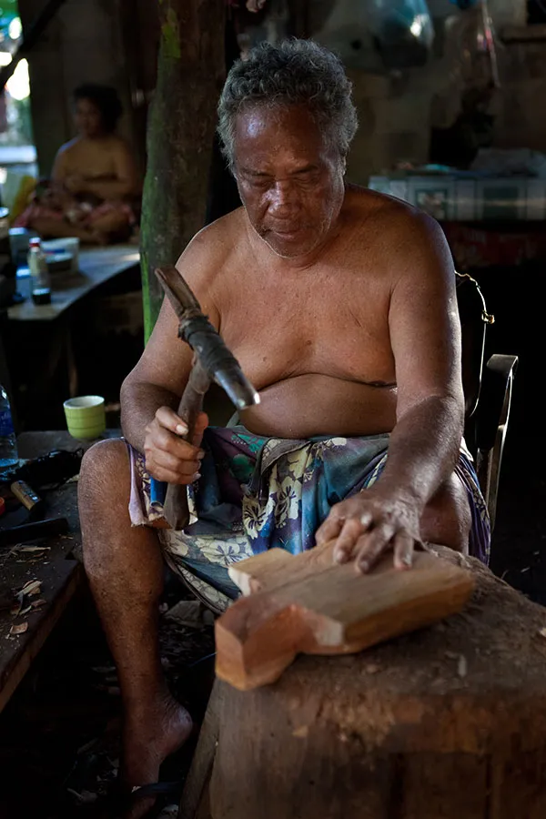
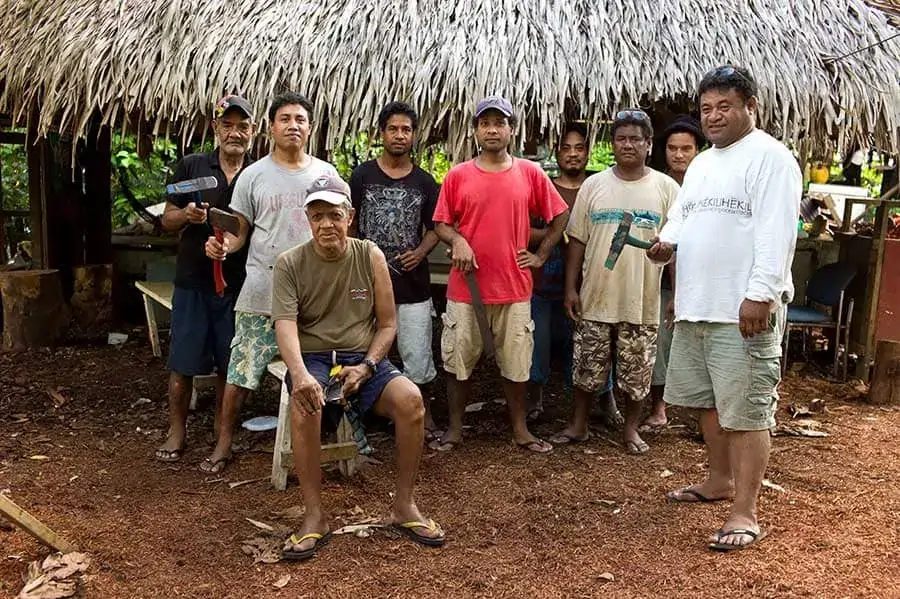
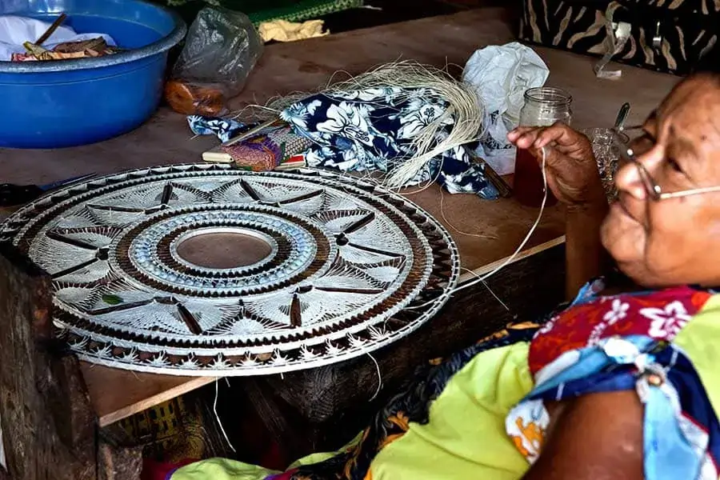

About Us

Kapinga Nukuoro Cultural Center (KNCC) Store was established in 2000 with the primary goal of supporting the local community by promoting and selling the traditional artworks of the Kapingamarangi people. The store was created to provide a space where the exceptional skills of master carvers and talented weavers could be recognized, appreciated, and fairly valued. By displaying these unique cultural pieces, the KNCC Store helps preserve traditional knowledge and artistic practices that have been passed down through generations.

Over the years, the store has grown beyond its original purpose and has become more than just a place of business. Today, the KNCC Store stands as both a marketplace and a cultural showcase, offering visitors a deeper understanding of Kapingamarangi heritage. It reflects the identity, stories, and craftsmanship of the people through its wide range of handmade items, including finely carved wooden sculptures, intricately woven mats, baskets, and other traditional artifacts.
Each piece sold at the KNCC Store represents the dedication, creativity, and cultural pride of its maker. The carvings often feature symbolic designs rooted in tradition, while the woven items highlight the patience and skill required to produce high-quality craftsmanship. Because of this, the store is often compared to a small museum, where every item tells a story and holds cultural significance.

In addition to supporting local artists economically, the KNCC Store also plays an important role in educating both locals and visitors about the rich heritage of the Kapingamarangi people. It serves as a bridge between generations, ensuring that the art of carving and weaving continues to thrive and remain an essential part of the community's identity.